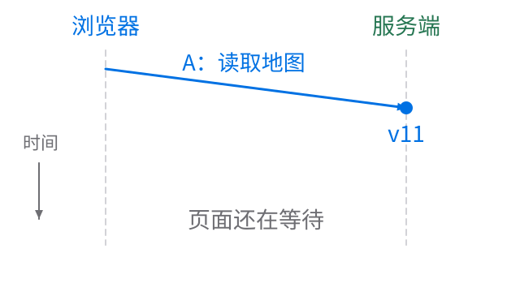
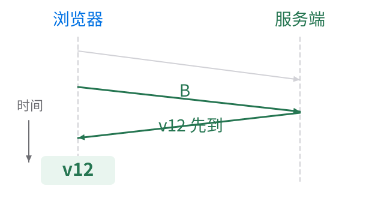
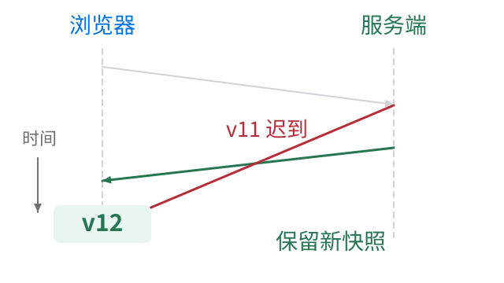
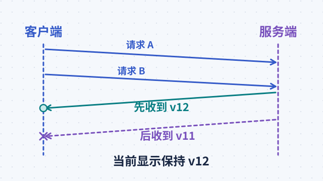

你在电脑上选好地图，换到手机后希望还是同一张。相反，刚刚松开的一个按键，谁也不希望它在手机上自己再按一次。这两种信息都能改变页面，却不该用同一种方式保存。
先写出状态的主人和寿命
某个折叠面板是否打开，可以只是当前页面的一点偏好，离开后丢掉也没关系。某个标签页里尚未提交的草稿，可以考虑使用 sessionStorage，使同一标签页刷新后仍能恢复。需要跨设备共享的任务选择，则应由双方都能读取的后端保存，并按照用户和任务区分。
还可以按数据的用途区分共享事实与临时输入。当前地图版本是多个客户端要取得一致的事实，列表滚到第几行是该标签页的偏好，“鼠标正按下”则是会随焦点或断线结束的临时状态。三者若共用同一个恢复函数，最难排查的往往是暂时操作被误当成可长期保留的数据。
筛选条件如果适合分享，写入 URL 查询参数也很自然。例如把“视觉”分类放进地址，收件人打开同一链接就能来到相同的筛选结果。反过来，鼠标按住、摇杆位置、控制租约这类状态有明确的交互起止。把所有字段序列化进浏览器存储，再原样恢复，可能把已经结束的动作复活。
写一张小表，在每个字段旁记下谁能写、谁能读、存活到何时、换设备要不要同步。许多争论会在这一层解决。例如“刷新要恢复”与“别的账户不应看到”完全可以同时满足，前提是选择恰当的持久化边界。
恢复界面要经过只读路径
按一次按钮，往往既改变当前界面，也向服务端提交命令。恢复之前选择的地图时，页面需要画出已保存的地图和目标，却不应把“用户刚点击开始导航”再提交一次。可以让渲染函数只依据已有状态画图，让操作函数专门接收新输入。
验证不用仅看截图。打开浏览器网络面板，从选择地图开始记录，分别执行刷新、断网重连和开第二个标签页。观察哪些请求是在读取快照，哪些确实创建或修改了一项任务。画面对了而写请求重复了一次，仍然说明恢复入口含有额外副作用。
两次请求可能倒着回来
假设查询 A 请求较早发出，服务端返回的是版本 11。用户随后做了新选择，查询 B 把版本 12 先送到了浏览器。再过片刻版本 11 才到，如果按“最后到达的响应获胜”，页面就会退回旧地图。客户端可以检查任务标识和版本，只应用与当前对象相符、且足够新的快照。
响应晚到，数据却可能更旧
同一张地图先后发出 A、B 两次读取请求。把请求与响应放到时间轴上，看“最后收到”为什么不等于“最新”。

先发出的请求还在路上
查看大图
浏览器先查询同一个地图资源，记作请求 A。这个请求取得的快照是版本 11，但响应尚未回到页面。图里的斜箭头表示消息跨越了一段时间，不代表网络具有固定速度。浏览器发起请求的先后顺序，不足以推出响应到达的先后顺序。

后发出的新版本先到
查看大图
用户随后触发请求 B，同一资源此时已有版本 12。B 的响应先到，页面接受它并显示 v12。这里的版本号是服务端明确约定的递增整数，因此能在同一资源内比较大小；如果接口给的是不透明 ETag，就不能直接把标记当数字排序。

迟到的旧响应不覆盖新图
查看大图
最后 A 的版本 11 才返回。若仅按到达顺序更新，画面会倒退；正确的读取逻辑先核对资源身份，再根据已约定的版本规则忽略旧快照。图中红箭头仍然表示真实收到了一份响应，只是它没有资格替换当前 v12。涉及写入竞争时，还需要服务端的条件更新。
网络顺序与数据版本是两件事。先限定资源身份，再使用接口约定的新旧规则；读取侧防回退不能替代写入侧的并发控制。
小练习：地图甲的 v12 到达后，切到地图乙并收到 v3，是否应因 3 小于 12 而忽略？
不应跨地图比较版本。它们是不同资源，先判断响应是否属于当前选中的地图乙，再在乙自己的版本序列中比较。
两台设备同时编辑还要处理写入竞争。服务端可为资源提供版本标记，客户端更新时使用 HTTP If-Match 等条件请求，要求“只有我读到的版本仍是当前版本才修改”。版本已变化时，服务端可以拒绝这次条件更新，由界面提示重新读取或合并。这个问题与单纯忽略迟到的读响应不同，保护位置应在真正接受写请求的一端。
版本比较还要限定对象范围。地图甲的版本 12 与地图乙的版本 3 不能直接比较新旧。可以先核对任务或资源标识，再在同一资源内比较版本。若服务端使用不透明的 ETag，客户端也不应把字符串当作递增数字排序，条件更新时按协议比较标记是否匹配即可。


做一次跨端验收
电脑选地图甲，手机进入同一任务后应显示甲。电脑再切到地图乙，新地图不适用的旧目标也要从持久状态中去掉。让手机刷新，用记录确认它只读取乙，没有把甲的目标又写回去。
最后人为让一个旧响应晚于新响应返回，观察界面和服务端版本。仍显示乙只是第一部分，再重开一个客户端读取服务端保存的结果。前端画面、持久数据和操作请求三者相符，才算完成了这个场景。